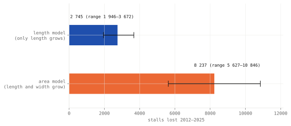
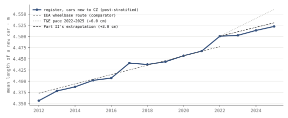
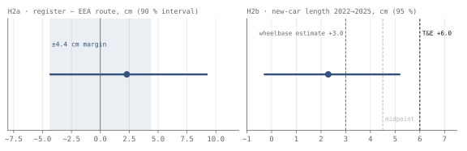
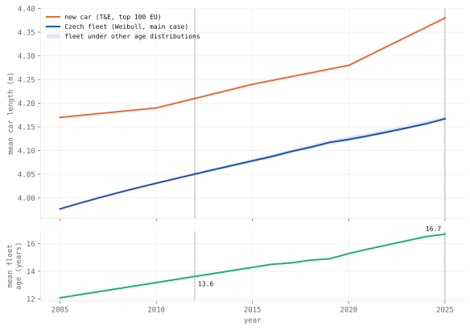
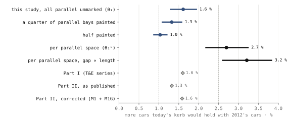
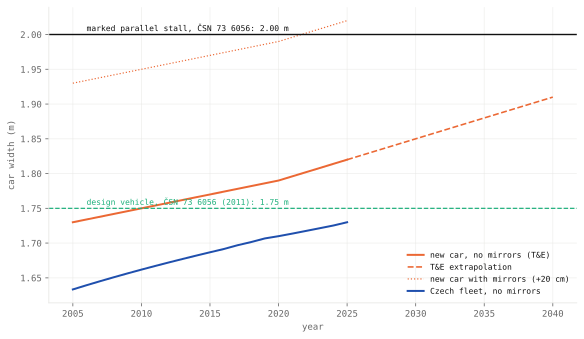
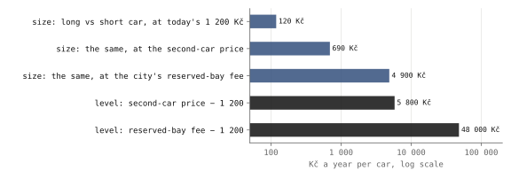
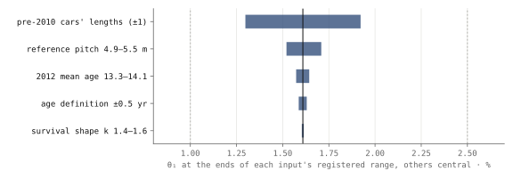
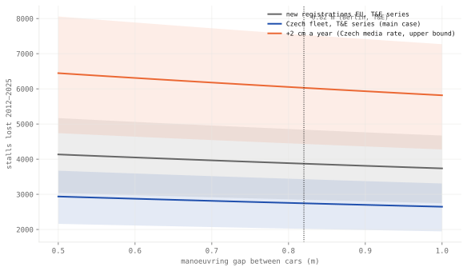
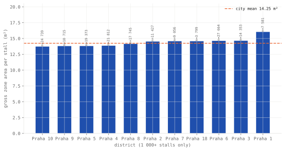

Prague, measured · Part 6 · registered analysis plan · paid parking zones and every car in the Czech register
Bigger cars, the same kerb
Three earlier texts estimated how many more cars Prague's paid kerb would hold if they were the size of 2012's cars, and what the flat resident permit does about it. This study measures what they borrowed, from every car in the national register and the zones' own geometry, under two tests and three estimates whose reporting sentences were written before the car lengths were read. One of the two tests passed, and on today's kerb 2012's cars would fit between one and two and a half more in every hundred. A long car's advantage under the flat permit is about 120 Kč a year, while the implicit subsidy (forgone rent) to parking at all is between 5 800 and 48 000 Kč a year, depending on the benchmark.
- more cars today's kerb would hold with 2012's cars
- 1.6 % 1.3–1.9 % · about 2 800 of 168 400 stalls
- a new car in Czechia, 2022 → 2025
- +2.3 cm 95 %: −0.3 to +5.2 · not T&E's +6.0
- a long car's advantage under the flat permit
- ~120 Kč a year · implicit subsidy (forgone rent) to parking at all: 5 800 to 48 000 Kč
- registered tests passed
- 1 of 2 Holm, family-wise 5 %
Photo: ŠJů · CC BY-SA 3.0, colour held

Cars are getting bigger, as anyone on a Prague street can see and as Transport & Environment has measured for the hundred best-selling models in the EU1. Where cars park end to end, a longer car leaves less room for the next one, and this series has asked how much room that is for one city, from the city's own data. Text 012 put a number on it for Prague's paid zones, 2 745 stalls. Text 023 measured the Czech market through its wheelbases and got 2 263. Text 034 set that against the growth in the number of cars and priced it against the flat resident permit. Each of the three borrowed at least one number it could not check. The parallel share came from Berlin, the car lengths after 2022 were extrapolated, and so was the age of the fleet in 2012.
Text 01 found a smaller loss than the argument about "carspreading" suggests, for two reasons that carry over into this study. On a kerb where cars park parallel, capacity depends on their length and hardly on their width, and the cars parked on the street are the whole fleet, which lengthens more slowly than the new cars in the showroom. Parking economics has long argued that the kerb is underpriced land and that its price, more than its supply, is the lever5678, and the size of cars is a newer strand of the same argument1. This study asks the size question again with most of the numbers measured rather than borrowed, and compares the answer with what the permit charges.
Kerb capacity and car length
The obvious calculation divides area by footprint: take the zone area, divide it by the outline of a car plus a manoeuvring gap, and see how many fewer cars fit today than in 2012. On Text 01's inputs it gave 5 600 to 10 800 lost stalls. It is the wrong calculation for most of Prague, because most of Prague parks parallel to the kerb, and there capacity is the length of kerb divided by the pitch, the car's length \(L\) plus the gap \(g\) between cars:
Width does not enter the formula, because a car 1.90 m wide instead of 1.75 m does not push out its neighbours, which stand behind and in front of it; it takes the extra width from the driving lane, which is a real cost of a different kind, and the area model books that lane as lost parking. On the same inputs the length model gave 2 745 stalls and the area model 8 237, so the choice of what to measure moved the answer more than any of the data did (fig. 1). For perpendicular stalls the logic runs the other way, so the estimate depends on the share of the kerb where cars park parallel, measured below.

The length model needs no kerb length, which the city's server does not provide. With the kerb held constant, the stalls a past fleet would fill equal today's stalls times the ratio of the two pitches, so today's count is the anchor:
The gap of 0.82 m comes from T&E, which reports a pitch of 5.20 m for 2025 from Berlin traffic data and an average car of 4.38 m1; the difference between them lands in the middle of the 0.5 to 1.0 m range that Text 01 tested. This study keeps the model and the gap and replaces the inputs around them.
How this was done
The analysis plan was written, reviewed by three referees (transport economics, statistics, a data audit), revised and committed to the site's public repository before any car length from the register was read9. The code was then frozen and run once on scrambled lengths, and only after that on the real ones; what changed after that is listed below. The plan fixes two tests, which share a 5 % family-wise error rate through Holm's procedure10, and three estimates that are reported rather than tested, with the sentence for each possible result written in advance. It also fixes the inputs and their ranges.
The size of the cars comes from the Ministry of Transport's register, which lists the vehicles registered in Czechia, including those since scrapped or exported, with their overall length11. The export read here has 19.4 million rows. Passenger cars and their off-road variant (M1 and M1G) number 13.4 million, of which 6.9 million are in operation. Length is recorded for at least 99.6 % of cars made since 2012, but for fewer than half of those made before 1990.
The kerb comes from the city's layer of paid parking zones on its ArcGIS server, where each segment has an area in real square metres12. The server runs in S-JTSK, so nothing needs reprojecting, whereas the copy on ArcGIS Online is in Web Mercator and overstates every area by a factor of 2.43 at Prague's latitude. Text 01 read the layer on 8 September 2026 as 16 874 polygons holding 168 456 stalls, 1.4 % above the figure the city's road authority published for December 202413, which is the expected direction since capacity has been added since then; two independent server aggregations, by zone type and by district, agreed on the total area to 0.0 m². This study reads the same layer as it stood on 28 September 2026, with 16 874 segments and 168 424 stalls. These are "administrative stalls", a count the city assigns to each segment.
Text 01 had pointed out that whether a segment is parallel or perpendicular can be read from its shape, since a band 2 to 2.5 m wide suggests cars along the kerb and one 4.5 to 5.5 m wide cars across it. This study reads the band width of each segment from its area and perimeter. Checked against 1 706 segments that the city had labelled in 2019, all in Prague 4, 5, 6 and 9, the rule classifies 97 % of stalls correctly. Applied to today's layer, it puts 59 % of stalls on parallel kerb, where the earlier texts had borrowed 68 % from Berlin1.
The tests
| Hypothesis | Test | Result |
|---|---|---|
| H2a · the register agrees with the wheelbase route of Text 02 on how much new cars grew, 2012–2022 | equivalence within ±4.4 cm14 | inconclusive (underpowered) +2.3 cm apart, p = 0.29 |
| H2b · new cars grew less in 2022–2025 than T&E's series implies (+6.0 cm) | one-sided | supported +2.3 cm, p = 0.007 |
p-values: studentised cluster bootstrap over 796 model lines, 9 999 draws. Holm thresholds 0.025 and 0.05; only H2b passes. The ±4.4 cm margin is the change in new-car growth that would move the per-parallel-space estimate by a quarter of a percentage point, fixed from constants before the data were read.
New cars in the register, 2012–2025
For each year the register gives the cars that were new to Czechia in that year. They are weighted to the EEA's registration counts model by model, so that cars which have since been scrapped or exported count as they did when they were sold15. Measured this way, the average new car grew by 12.7 cm per decade over 2012–2022.
Text 02 had to go through the wheelbase, the only dimension the EEA publishes. The plan re-ran that route with the off-road variant included, which Text 02 had dropped, and converted wheelbase to length with the register's own ratio within each model line, 1.47 mm of length per mm of wheelbase. That route gives 10.4 cm, while Text 02's own ratio (0.618)16 turns the same wheelbase into 13.0 cm. The register and the wheelbase route differ by 2.3 cm, and the test cannot say whether that counts as agreement, because the 90 % interval runs from −4.3 to +9.2 cm, far wider than the margin. The plan's power check, run before any length was read, had put the chance of showing agreement at 16 %, and the realised standard error was 3.9 cm against the 2.4 cm planned, so the real power was lower still. The result is inconclusive (underpowered) and does not indicate that the two routes disagree.

For 2022 to 2025, the years Text 02 could not see, the register gives a firmer result. New cars grew by 2.3 cm over those three years (95 % interval −0.3 to +5.2), against the 6.0 cm that T&E's European series implies1, and the registered test against 6.0 passes (p = 0.007). The plan's other question, whether the Czech market kept Text 02's pace of about 3 cm, cannot be answered from these data, since the interval covers both 3 and the midpoint of 4.5. T&E's figures are rounded to the centimetre, which moves a three-year difference by up to about 0.7 cm.

Re-running Text 02's own pipeline with the off-road variant included changes its numbers as well. The wheelbase grew 80 mm over the decade rather than 68, and Text 02's estimate rises from 2 263 stalls to about 2 700, with a band of 2 400–3 200, and a correction note on Text 02 records the change.
What today's kerb would hold with 2012's cars
New lengths reach the parked fleet slowly, because the average car in the Czech fleet is almost seventeen years old17. Text 01 had only T&E's new-car series, in which the EU's top 100 models grew 17 cm in length between 2012 and 20251. It weighted each model year by a survival curve calibrated to the fleet's mean age, which rose from an extrapolated 13.6 years to a published 16.7 over the same period, and found that the average parked car grew 11.7 cm, so that the ageing of the fleet absorbed about a third of the growth. The shape of the age distribution (Weibull, exponential, uniform) moved that figure by hundredths of a centimetre (fig. 4).

This study models the fleet from the register itself. Every car entering in each year, at the age it entered (new, or imported used), survives to 2012 and to 2025 on a curve calibrated to the fleet's mean age in each year, 16.7 years in 2025, which is published, and an assumed 13.3–14.1 years in 2012, which is not. On that model the average car in the fleet grew from 4.23 m to 4.37 m. On a parallel kerb, where capacity is kerb length divided by car length plus gap, the estimates are these:
| Estimate | Median | Interval under the registered inputs |
|---|---|---|
| θ₁ · all stalls, parallel bays unmarked | 1.6 % | 1.3 – 1.9 % |
| θ₁ᵘ · per space on parallel kerb | 2.7 % | 2.2 – 3.2 % |
| stalls, on 168 400 administrative stalls | about 2 800 | 2 200 – 3 300 |
| θ₁ if a quarter / half of parallel bays are painted | 1.3 / 1.0 % | 1.1 – 1.6 / 0.9 – 1.2 % |
The whole interval for all stalls sits in one of the bands fixed in advance, and the plan's sentence for that band reads: on today's kerb, 2012's cars would fit between one and two and a half more cars in every hundred: real, and small next to the count of cars. The second half of that sentence was written for a comparison this study could not yet make, because the count of permits by year has been requested from TSK (see the section on the number of cars below).
The per-parallel-space estimate, 2.2–3.2 %, straddles two bands, and for that case the plan says to give both sentences and the input that decides between them: on today's kerb, 2012's cars would fit between one and two and a half, or between two and a half and five, more cars in every hundred parallel spaces. Which of the two holds depends above all on how long the cars made before 2010 really were (fig. 8).

Text 01 and the corrected Text 02 arrive at about the same 1.6 %, and Text 01 got there by a different route. It had a shorter fleet growth (11.7 cm) and a larger parallel share (68 %), while this study measures a longer growth (14 cm) and a smaller share (59 %), and the two differences offset each other. Per parallel space, 2.7 % over thirteen years is far below T&E's headline pro-rated to the same span (7.4–12.1 %)1. It is close to what T&E's own parameters imply (2.9–3.4 %), a figure Text 01 could reproduce where it could not reproduce the headline.
Where bays are painted, a longer car does not cost a bay unless it no longer fits in one. The share of cars longer than 5.25 m, half a metre short of a painted parallel bay, rose from 0.3 % to 1.1 %. Which of Prague's bays are painted is not in the open data, so the estimate above treats every parallel bay as unmarked, which makes it an upper bound, and the painted scenarios show how far it would fall.
Car width and the driving lane
The extra width of the cars, which the length model leaves out, comes out of the driving lane. On Text 01's inputs, cars in the zones are 5.8 cm wider than in 2012, which on parallel stalls comes to 27 598 m², or 2.76 hectares of roadway, the area of roughly 2 000 of today's stalls, which no parking statistic counts because the lane was never parking space.
An average new car with its mirrors out is 2.02 m wide. T&E measures width without mirrors, following SAE J110018, and mirrors add 15–25 cm, of which 20 are used here19. The marked parallel stall in the Czech standard ČSN 73 6056 is 2.00 m wide20, and new cars crossed that line around 2022. The standard's own design vehicle, from 2011, is 1.75 m wide, so new cars had outgrown it before the standard was published (fig. 6). These widths are T&E's, for the EU's top 100 models. The one Czech data point, the 111 best-selling new cars of 201921, sits 1.4 cm wider and 2.8 cm longer than the EU series, so the EU series is used for Czech cars as an approximation.

The resident permit and the price of kerb space
A resident's permit for a first car costs 1 200 Kč a year in the main areas, 600 Kč in the outer sub-areas of Praha 5, 8, 9, 10 and 18, and 360 Kč for residents over 65. A second car costs 7 000 Kč, and since 2026 zero-emission cars pay half22. At 13.5 m² of net zone area per stall, the main-area price comes to 89 Kč per square metre a year (44 Kč in the outer sub-areas), whether the car is a Fabia or a Kodiaq, so the price rations neither the number of cars nor their size.
Because the first car pays the same whatever its length, the price per metre of kerb falls as the car gets longer. In the national fleet on the road (Prague's own fleet cannot be identified in the open data), a short car at the tenth percentile of length, 3.96 m, pays about 250 Kč per metre of kerb a year, and a long one at the ninetieth, 4.84 m, about 210. A permit priced by length, with today's average kept, would run from about 1 140 Kč for the short car to about 1 260 for the long one, about 120 Kč a year apart, and would change the price by more than a tenth for 2 % of cars. That difference is the size component of the subsidy.
The level of the subsidy is a separate quantity, the rent forgone on 13.5 m² of zone for parking at all, which the plan brackets and never states as one number. A permit entitles its holder to search for a space rather than to a particular bay, and the search has its own cost23. Against the city's own price for a second car, 7 000 Kč, the first-car permit is 5 800 Kč under it. Against the city's fee for reserving a permanent bay, 10 Kč per m² a day24, which pays for exclusive round-the-clock use and so marks an upper end, it is 48 000 Kč under it. The two middle points the plan named, land value at a 4 % return and garage rents, had no dated source fixed in time and are not shown.

At every price level the gap between a long and a short car is about a tenth of the price of the space itself. The flat permit's size subsidy is about 120 Kč a year between a short and a long car, and the implicit subsidy (forgone rent) to parking at all is between 5 800 and 48 000 Kč a year, depending on the benchmark. Pricing by length would therefore correct the price and change little unless the price itself rose.
Permits priced by car size in other cities
| City | Who pays | Rule |
|---|---|---|
| Koblenz, from March 202425 | residents | length × width × 23.40 € a year, at least 100 € |
| Cologne, from March 202526 | residents | 100 € up to 4 109 mm, 110 € to 4 709 mm, 120 € above |
| Freiburg, 2022–202327 | residents | 240 / 360 / 480 € by length; annulled by the Federal Administrative Court in June 2023, partly because the steps between length classes were too large |
| Paris, from October 202428 | visitors only | hourly tariff tripled for cars of 1.6 t or more (2 t electric); residents exempt (secondary source; no paris.fr page was located) |
| Prague | residents | 1 200 Kč a year for a first car in the main areas, whatever its size |
Cologne's lower class limit sits 1 mm above the Fabia (4 108 mm) and its upper limit 12 mm above the first Kodiaq (4 697 mm), the two cars used in Text 03. That was checked on the city's own release. Weight-based schemes (Lyon, Tübingen) and footprint schemes elsewhere (Aachen, Bonn) could not be verified in primary sources and are left out, as the plan required. Prices are shown in their own currency. The planned conversion to one unit is listed under changes.
The number of cars against their size
The plan's third estimate was not run, because it awaits TSK data. In the districts whose zones barely changed since 2012 (Prague 1, 2, 3 and 7), it compares how much more kerb the growing number of cars claims with how much more their length claims, and for that it needs the number of valid permits at each year's end, a series that is not public. The only public figure is 215 108 valid permits on 1 May 2026, from TSK's answer 2026-05-19-058 to an information request29. The request for the series is for the author to send, and the estimate will be added when the data arrive.
Sensitivity of the estimate to its inputs
For every input, the plan asked how far it would have to move to change the band. No single input can do so within its registered range. The one that could, the parallel share, would have to reach 93 % or more, against the 58–60 % measured.

Almost all of the uncertainty (a first-order share of 0.92 in a variance decomposition30) comes from how long the cars made before 2010 really were. The register records them only as survivors. Many of the rest were scrapped before the register's history begins, and the plan brackets that ignorance with a symmetric allowance of up to ±10 cm for the oldest cars. The survival curve's shape is narrowly constrained, since, fitted to the fleet's published mean age, it reproduces the published fleet counts for 2016–2019 to within 5 % only for one narrow range of shapes (within 3 % at the shape used), and that range was fixed before any length was read.
In Text 01, moving the gap between parked cars across 0.5–1.0 m changed the estimate by only +7 / −4 % around the central case, because the gap sits in the denominator next to a car length five times larger, while the parallel share mattered far more (fig. 9); in this study the reference pitch, which carries the gap, moves θ₁ only between 1.52 and 1.71 %. Text 01's full grid of assumptions ran from 1 946 to 8 058 stalls (1.1 to 4.6 % of capacity), and the top of that range appeared only with the growth rate of 2 cm a year quoted in Czech media and attributed to the car importers' association, for which no primary source could be found31. T&E's own rate is 1.2 cm a year32.

One calibration check that the plan wrote down failed: the modelled fleet of 2025 is 3.9 cm shorter than the fleet the register shows in operation. The registered remedy, choosing the curve's shape to close the gap, could not close it, because the gap is smallest at the edge of the allowed range. A shortfall common to 2012 and 2025 would hardly move the loss, but one that differs between the years would, and nothing here can rule that out. The code for this rule was written after the real run, and it fixed the shape at the edge value (k = 1.5); with the shape drawn across its range the estimates are the same to four decimals.
Checks on the zone data and on T&E's projection
The capacity model passed 27 tests in Text 01. Among them, the continuous formula agrees with a Monte Carlo over the real distribution of segment sizes (16 784 segments, median 8 stalls), in which integer effects add 0.12 percentage points and no more, and the stall totals agree with the road authority's published numbers13. The zones' geometry turned out uniform across districts, at 13.7 to 16.0 m² of gross zone area per stall, so no Simpson's paradox hides two opposite cities inside one mean (fig. 10). Text 01's code, its 27 tests and the full methodology note (in Czech) are in the project repository, and its figures are rendered from the run by make_figures_web.py.

T&E's headline projection, that European cities lose 8.5 to 14 % of parallel parking by 20401, could not be reproduced from T&E's own published parameters, which give 3.4 to 4.0 %. The factor of two to four between them is unexplained, so this series cites the headline as T&E's modelling and does not use it as a check on its own.
What changed after registration
Several changes are choices about the design and its implementation. The blind dry run scrambled lengths across years within each make, as registered, since scrambling within each year would have kept, and so revealed, the trend being tested. The size component is defined as the gap between the 90th and 10th percentile of a revenue-neutral length price, and the fleet for the price section is national, because Prague's fleet cannot be identified in the open data. Model lines matched well but are coarse in places. Between 97.3 and 100 % of each year's EEA registrations matched a register model line, and the line key merges a few families, such as Hyundai's i-models into one "I" line. Implementation shortcuts were fixed at the freeze, namely a normal approximation for the imputation variance, an inner bootstrap of 50 draws, a reduced size check (200 simulations), and values that overflowed the extract set to missing. The survival shape was fixed at k = 1.5, and the code for the calibration rule that fixed it was written after the real run.
Other changes came with or after the results. The painted-bay share had a coding error that counted cars with no recorded length as long. It was found in the first real output, because it gave an impossible negative loss, and fixed, and the headline estimates did not change beyond the fourth decimal. The fleet calibration check failed by 3.9 cm, and its registered remedy could not close the gap (above). H2a was less precise than planned, with a realised standard error of 3.9 cm against 2.4 planned, and the size check at the upper margin rejected at 0.11 instead of 0.05. The variance decomposition gave two small negative shares (−0.015 and −0.001), which are estimator noise and read as zero. The reserved-bay fee varies by district: the 10 Kč per m² a day applies in the zone districts, while Prague 13 charges 5 Kč and some outer districts 1 Kč. Text 02's numbers change, because the off-road variant it dropped is included (above), and as a result Text 03 now conflicts with Text 02. Its 174 stalls a year came from Text 02's first estimate; the corrected figure is 208 (183–250), and Text 03 carries a dated correction.
Several registered measurements and estimates were not made. Painted bays were not measured, because neither the orthophoto sample nor TSK's inventory exists yet, so the estimate treats all parallel bays as unmarked and shows two painted scenarios. No 2026 orthophoto sample was labelled, and the parallel share rests on the 2019 labels, which cover Prague 4, 5, 6 and 9 only. Two points of the price bracket were not computed, because no dated source was fixed, and the comparison with other cities stays in their own currencies. The count-against-size estimate was not run (awaiting TSK data), and its planned fallback on registrations was not done either.
The full list, dated, is in the design file9. Every number comes from these scripts:
tools/parking6/parking6_estimate.pyparking6_design.pyparking6_dict.pypart2_m1g.py
The outputs are in assets/parking6/.
What this does not show
These are counterfactuals on today's kerb. The model holds today's kerb constant and asks how many of 2012's cars it would take; it has no count of the stalls Prague had in 2012. The register describes the cars registered in Czechia, while the mix parked in Prague's zones is not published, and Prague's fleet is probably younger than the national one. The 2012 fleet is modelled, and the lengths of its oldest cars are assumed, with a bracket on both sides. The widths in the section on the driving lane are T&E's EU series, and the stall dimensions of ČSN 73 6056 come from secondary sources because the standard itself was not opened. Stalls are the city's administrative count, and a permit records an entitlement to park, which says nothing about whether the car is there. Nothing here says how drivers would respond to a different price.
References
- Transport & Environment (2026): Ever-bigger? Car size at a crossroads, p. 26. Dimension series for the 100 best-selling EU models, width without mirrors; 5.20 m end-to-end pitch (Berlin Traffic Information Centre, 2025); 68 % parallel share (Berlin); 8.5–14 % loss projection to 2040.
- Šandová, B. (2026): How many parking spaces Prague lost to bigger cars (Text 01).
- Šandová, B. (2026): Parking II: the fleet, measured (Text 02), with the correction of 29 September 2026.
- Šandová, B. (2026): Parking III: count, not size (Text 03).
- Shoup, D. (2005, updated 2011): The High Cost of Free Parking. APA Planners Press.
- Shoup, D. (1997): The high cost of free parking. Journal of Planning Education and Research 17(1), 3–20.
- Pierce, G., Shoup, D. (2013): Getting the prices right: an evaluation of pricing parking by demand in San Francisco. Journal of the American Planning Association 79(1), 67–81.
- Inci, E. (2015): A review of the economics of parking. Economics of Transportation 4(1–2), 50–63.
- Šandová, B. (2026): Prague's kerb, measured: research design, registered version with dated changes; referee reports, design-stage checks, code freeze and file hashes in the same folder.
- Holm, S. (1979): A simple sequentially rejective multiple test procedure. Scandinavian Journal of Statistics 6(2), 65–70.
- Ministerstvo dopravy: Registr silničních vozidel, open data, Vozidla – technické údaje, export of 1 September 2026 (19 383 927 rows); Registr silničních vozidel data cube.
- Hlavní město Praha, ArcGIS Server: zóny placeného stání, úseky (MapServer/3), tarifní zóny (MapServer/10), vyhrazená, ZTP a zásobovací stání (placene_parkovani). Server-side aggregations, snapshots of 8 September 2026 (Text 01) and 28 September 2026 (this study). Coordinate system S-JTSK (EPSG 5514). 2019 labelled segments (TYPSTANI) from the city's ZPS map data.
- TSK Praha via data.praha.eu: Počty parkovacích míst v Praze, December 2024: 101 908 resident, 63 117 mixed, 1 155 visitor stalls.
- Schuirmann, D. J. (1987): A comparison of the two one-sided tests procedure and the power approach for assessing the equivalence of average bioavailability. Journal of Pharmacokinetics and Biopharmaceutics 15(6), 657–680.
- European Environment Agency: Monitoring of CO2 emissions from passenger cars, Regulation (EU) 2019/631, via Discodata: CZ, M1 and M1G, final files 2010–2022, counts 2023–2025 (2025 provisional).
- Holder, D. et al. (2021): Systematic analysis of changing vehicle exterior dimensions. Proceedings of the Design Society 1 (International Conference on Engineering Design, ICED21), 10.1017/pds.2021.553 (wheelbase/length 0.618, R² 0.75). Text 01 also listed the Canadian Vehicle Specifications (length, wheelbase and track together) for calibrating such conversions; not used.
- Mean age and size of the Czech passenger-car fleet: ČAPPO, Stav vozového parku v ČR (SDA data), 2016–2025; ČSÚ, Auta na českých silnicích, for 2014; MD ČR, Osobní automobily registrované v ČR. Distribution by model year is not published. Text 01 modelled it (Weibull, exponential, uniform) and calibrated it to the mean age: 16.68 years in 2025 (published) and 13.62 in 2012, which is not published but extrapolated from the published 14.06 (2014, ČSÚ) and 14.5 (2016, SDA).
- SAE J1100 Motor Vehicle Dimensions, W103: overall width excluding mirrors.
- Mirror allowance 15–25 cm: Car width explained: body, mirrors folded, mirrors out (drivesize.com).
- ČSN 73 6056 (March 2011), Odstavné a parkovací plochy silničních vozidel. The standard is paywalled and its tables were not opened; stall dimensions (parallel 2.00 × 5.75 m, perpendicular 2.50 × 5.00 m) and the 1.75 m design vehicle are taken from secondary sources, chiefly [21], which disagree on the parallel stall length (5.50–6.75 m by source and variant). The length model does not depend on them; the width claim does.
- Závadská, A. (2020): Optimalizace návrhových prvků ČSN 73 6056, VUT Brno. Weighted mean of the 111 best-selling new cars in Czechia, 1–11/2019 (205 994 units): 1.80 × 4.30 m.
- TSK Praha: Výtah z ceníků parkovacích oprávnění (permit prices by area and user, valid 2026); Parking (zone management; the "177 thousand stalls" figure without date or breakdown).
- van Ommeren, J., Wentink, D., Rietveld, P. (2012): Empirical evidence on cruising for parking. Transportation Research Part A 46(1), 123–130.
- Obecně závazná vyhláška hl. m. Prahy č. 16/2025, o místním poplatku za užívání veřejného prostranství, § 2(1)(k) and Annex 1.
- Stadt Koblenz: Erläuterung Bewohnerparkgebühren 2024.
- Stadt Köln: Ab 1. März 2025 gilt die neue Bewohnerparkgebührenordnung.
- Bundesverwaltungsgericht, 9 CN 2.22, 13 June 2023.
- electrive (2024): Paris triples parking fees for SUVs, 4 October 2024.
- TSK Praha: answers to information requests under Act 106/1999, Poskytnuté informace (answer 2026-05-19-058 of 19 May 2026: 215 108 valid permits on 1 May 2026); ÚDI/TSK Ročenka dopravy 2012–2024 for stalls by district.
- Saltelli, A. et al. (2008): Global Sensitivity Analysis: The Primer. Wiley.
- "2 cm a year" appears in Czech media (iROZHLAS) attributed to SDA data; no primary SDA publication of that rate was found, so it enters only as the upper bound.
- Transport & Environment: Carspreading to wipe out up to 14 % of on-street parking in European cities (annual growth rates: 1.2 cm length, 0.5 cm width).